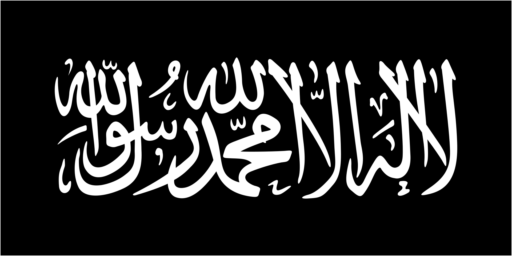
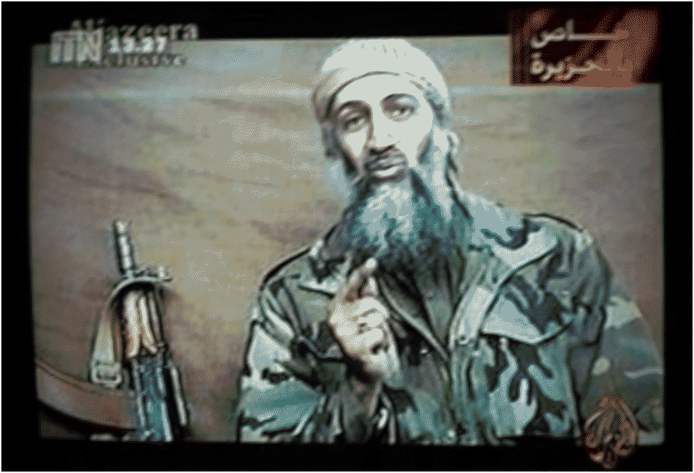

Al-Qaeda (AQ) is an international salafi jihadist network based in Taliban-led Afghanistan  . Al-Qaeda was founded during the Soviet-Afghan war by Saudi-born son of an aristocrat Osama Bin Laden, for the purpose of funneling money, arms, and foreign fighters to assist the Afghan mujahideen
. Al-Qaeda was founded during the Soviet-Afghan war by Saudi-born son of an aristocrat Osama Bin Laden, for the purpose of funneling money, arms, and foreign fighters to assist the Afghan mujahideen  in their resistance. Al-Qaeda would become a tough target for the Soviets as they would train Arab foreign fighters in multiple mountainside camps. Following the withdrawal of Soviet forces, al-Qaeda would move to Sudan
in their resistance. Al-Qaeda would become a tough target for the Soviets as they would train Arab foreign fighters in multiple mountainside camps. Following the withdrawal of Soviet forces, al-Qaeda would move to Sudan  , get involved in other wars in muslim countries, before finally moving to Afghanistan
, get involved in other wars in muslim countries, before finally moving to Afghanistan  once more, now under the thumb of the Taliban
once more, now under the thumb of the Taliban  . The outlook of al-Qaeda would radically change in 2001, when al-Qaeda members hijacked and crashed planes into the World Trade Center in New York, resulting in the worst terrorist attack in history. The ensuing Global War on Terror led to the multinational coalition's invasion of Afghanistan
. The outlook of al-Qaeda would radically change in 2001, when al-Qaeda members hijacked and crashed planes into the World Trade Center in New York, resulting in the worst terrorist attack in history. The ensuing Global War on Terror led to the multinational coalition's invasion of Afghanistan  , forcing al-Qaeda back into an insurgent force. When the United States
, forcing al-Qaeda back into an insurgent force. When the United States  invaded Iraq
invaded Iraq  in 2003, al-Qaeda grew and nurtured Iraqi branch waging an insurgency that would leave thousands dead. The next wave of terrorism would follow the Arab Spring, where al-Qaeda took advantage of the chaos, creating and growing branches in Syria
in 2003, al-Qaeda grew and nurtured Iraqi branch waging an insurgency that would leave thousands dead. The next wave of terrorism would follow the Arab Spring, where al-Qaeda took advantage of the chaos, creating and growing branches in Syria  , Yemen
, Yemen  , Mali
, Mali  , and Libya
, and Libya  . In the post Arab Spring world, al-Qaeda would face its most potent enemy: IS
. In the post Arab Spring world, al-Qaeda would face its most potent enemy: IS  . The Islamic State
. The Islamic State  , who actually started off from AQ, began to cleave off sections of jihadi support and foreign fighters who used to swear allegiance to al-Qaeda. Today, following the disastrous US
, who actually started off from AQ, began to cleave off sections of jihadi support and foreign fighters who used to swear allegiance to al-Qaeda. Today, following the disastrous US  withdrawal, AQ has rebuilt itself in Taliban-held Afghanistan
withdrawal, AQ has rebuilt itself in Taliban-held Afghanistan  , continuing to pose a threat to millions. Unlike Daesh
, continuing to pose a threat to millions. Unlike Daesh  , AQ does not have a caliph, instead believing in jihadist revolutions in individual countries before uniting the ummah. Al-Qaeda is designated by nearly every country as a terrorist group.
, AQ does not have a caliph, instead believing in jihadist revolutions in individual countries before uniting the ummah. Al-Qaeda is designated by nearly every country as a terrorist group.
Al-Qaeda is the oldest violent transnational jihadist and pan-Islamist group. Unlike Hizb ut-Tahrir  or the Muslim Brotherhood
or the Muslim Brotherhood  , they use violent methods and never participate in any secular democratic process. But they are also unlike the Islamic State
, they use violent methods and never participate in any secular democratic process. But they are also unlike the Islamic State  , since they do not pledge their allegiance to a single Caliph. Today al-Qaeda is propped up by various affiliates and networks across the islamic world, who all pledge fealty to central command in Afghanistan, who in itself has been aligned with the Taliban group/government
, since they do not pledge their allegiance to a single Caliph. Today al-Qaeda is propped up by various affiliates and networks across the islamic world, who all pledge fealty to central command in Afghanistan, who in itself has been aligned with the Taliban group/government  since the 1990s. AQAP, AQIM, Hurras ad-Din, and al-Shabaab are all examples of these affiliates, operating within their own battlefields, utilizing their own propaganda, conducting their own local alliances, and governing their own territories. They all have a degree of independence and autonomy. All of these groups believe that they should overthrow their governments and establish ultra-strict sharia law. However, unlike the stubborn and ideologically strict Islamic State
since the 1990s. AQAP, AQIM, Hurras ad-Din, and al-Shabaab are all examples of these affiliates, operating within their own battlefields, utilizing their own propaganda, conducting their own local alliances, and governing their own territories. They all have a degree of independence and autonomy. All of these groups believe that they should overthrow their governments and establish ultra-strict sharia law. However, unlike the stubborn and ideologically strict Islamic State  , al-Qaeda is far more pragmatic strategically, being more willing to make local truces and alliances. For example, the Bin Laden leadership officially stated that they believed that the shias of Iraq
, al-Qaeda is far more pragmatic strategically, being more willing to make local truces and alliances. For example, the Bin Laden leadership officially stated that they believed that the shias of Iraq  should not be targeted over American forces
should not be targeted over American forces  . But al-Zarqawi's affiliate would continue attempts at slaughtering the hated "Rafidah" and would later break off from al-Qaeda to form the Islamic State
. But al-Zarqawi's affiliate would continue attempts at slaughtering the hated "Rafidah" and would later break off from al-Qaeda to form the Islamic State  . As another example, al-Qaeda's faction in East Africa, al-Shabaab, is known to deal and smuggle arms and equipment with the Iranian
. As another example, al-Qaeda's faction in East Africa, al-Shabaab, is known to deal and smuggle arms and equipment with the Iranian  backed Houthis in Yemen
backed Houthis in Yemen  . Following the October 7 attack, al-Qaeda put aside its differences with Hamas
. Following the October 7 attack, al-Qaeda put aside its differences with Hamas  and congratulated them for their daring mission and sent condolences for fallen commanders in the ensuing war. However, other factions, like the former al-Nusra Front in Syria
and congratulated them for their daring mission and sent condolences for fallen commanders in the ensuing war. However, other factions, like the former al-Nusra Front in Syria  , were known for targeting and killing non-sunnis, including shias. All factions are united in their belief that the West and America
, were known for targeting and killing non-sunnis, including shias. All factions are united in their belief that the West and America  are the antithesis of Islam and that their interests must be challenged in all places where they are found. Al-Qaeda deems any Muslim regime that collaborates with America or the West as apostates, illegitimate, and in need of overthrow. This hatred comes from a personal grudge Bin Laden carried against his home country of Saudi Arabia
are the antithesis of Islam and that their interests must be challenged in all places where they are found. Al-Qaeda deems any Muslim regime that collaborates with America or the West as apostates, illegitimate, and in need of overthrow. This hatred comes from a personal grudge Bin Laden carried against his home country of Saudi Arabia  , despite its conservatism and implementation of shariah, for rejecting AQ support in the Gulf War and instead accepting American troops
, despite its conservatism and implementation of shariah, for rejecting AQ support in the Gulf War and instead accepting American troops  .
.

Fig 1. OSAMA BIN LADEN IN ONE OF MANY PROPAGANDA TAPES RELEASED TO AL-JAZEERA AND THE WIDER WORLD c. OCTOBER OF 2001
Al-Qaeda was the first jihadist organization to have used propaganda as a potent tool. During the 2000s, Osama Bin Laden released a slew of videotapes featuring himself talking about a variety of theological and ideological issues. These tapes, combined with other methods like pamphlets, posters, and manuscripts, helped increase the outreach of the group, assisting in the recruitment of fighters. These tapes and the group’s edited propaganda portrayed him and the group as a bulwark of Islam untainted by moral degeneracy and America  /Zionist
/Zionist  infiltration. With the rise of the internet, al-Qaeda used internet forums and SMS groups, expanding their reach to millions more. In the modern day, al-Qaeda has expanded their operations to social media and encrypted messaging networks, albeit at a lower sophistication than ISIS
infiltration. With the rise of the internet, al-Qaeda used internet forums and SMS groups, expanding their reach to millions more. In the modern day, al-Qaeda has expanded their operations to social media and encrypted messaging networks, albeit at a lower sophistication than ISIS  or Hamas
or Hamas  . To this day, Saif al-Adel, the current leader of al-Qaeda, continues to write essays and the like about the group’s perspective on current events, like the war in Gaza.
. To this day, Saif al-Adel, the current leader of al-Qaeda, continues to write essays and the like about the group’s perspective on current events, like the war in Gaza.
Al-Qaeda has used a variety of tactics specific to its current situation and the strength of its adversaries. Fighting against stronger conventional forces like the United States  in Iraq
in Iraq  , al-Qaeda relied on a slew of suicide bombers. The bombers targeted a variety of military, economic, and political posts, hitting directly at the heart of the foreign occupation while using the element of surprise and regularity. They were used to destroy Abrams tanks, Humvees, checkpoints, but often killed many civilians. While condemned by most traditional clerics, hardline jihadist ones would justify these suicide missions by stating that the martyrdom operations were a religious obligation against the American infidel. In places where there is no insurgency to fight, al-Qaeda launches large scale terrorist attacks against high profile targets in order to pressure the Americans
, al-Qaeda relied on a slew of suicide bombers. The bombers targeted a variety of military, economic, and political posts, hitting directly at the heart of the foreign occupation while using the element of surprise and regularity. They were used to destroy Abrams tanks, Humvees, checkpoints, but often killed many civilians. While condemned by most traditional clerics, hardline jihadist ones would justify these suicide missions by stating that the martyrdom operations were a religious obligation against the American infidel. In places where there is no insurgency to fight, al-Qaeda launches large scale terrorist attacks against high profile targets in order to pressure the Americans  and the west as a whole to withdraw from the Islamic world. They are sending a message that nowhere in the Islamic world is safe for American interests. In recent years, al-Qaeda affiliates like al-Shabaab and JNIM are increasingly using attack/suicide drones against their enemies. The proliferation of this technology is proving to be a great power balancer in guerilla and unconventional warfare. For western muslims, al-Qaeda says they should do arms training with their home country’s military and launch lone wolf attacks against the factories and bases of the infidel. The efficiency of these campaigns are often sabotaged by the inner jihadist struggle between al-Qaeda and the Islamic State
and the west as a whole to withdraw from the Islamic world. They are sending a message that nowhere in the Islamic world is safe for American interests. In recent years, al-Qaeda affiliates like al-Shabaab and JNIM are increasingly using attack/suicide drones against their enemies. The proliferation of this technology is proving to be a great power balancer in guerilla and unconventional warfare. For western muslims, al-Qaeda says they should do arms training with their home country’s military and launch lone wolf attacks against the factories and bases of the infidel. The efficiency of these campaigns are often sabotaged by the inner jihadist struggle between al-Qaeda and the Islamic State  . Funding, mujahideen, and foreign volunteers are all on the line.
. Funding, mujahideen, and foreign volunteers are all on the line.
• Attacks attributed to al-Qaeda
• https://www.jstor.org/stable/10.7249/mg429af.10?seq=6
• https://www.washingtoninstitute.org/policy-analysis/gaza-war-has-jump-started-weakened-al-qaeda
• https://www.washingtoninstitute.org/policy-analysis/bin-laden-increases-his-challenge-house-saud
• https://www.ausa.org/sites/default/files/LWP-46-Suicide-Bombings-in-Operation-Iraqi-Freedom.pdf
• https://www.brookings.edu/articles/comparing-al-qaeda-and-isis-different-goals-different-targets/